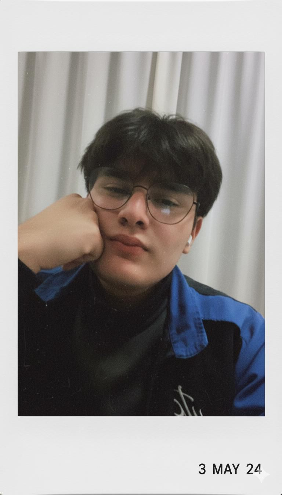

Hola, soy Johan Lozada
Desarrollador Jr apasionado por crear soluciones reales con tecnología. He trabajado en sistemas web, móviles, SIG, BI, robótica y modelos predictivos, siempre buscando aprender y mejorar.

Johan Javier Lozada Moreta
Desarrollador • SIG • BI • Robótica
Proyectos destacados
Monitoreo de Suelos con IoT y Docker
Aplicación móvil y backend para medir humedad y calidad del suelo en tiempo real.
Flutter Docker IoTSIG Triangulación Piloto
Registro, edición y graficación de rutas y triangulación geográfica.
Laravel SIG MapasSistema Legal
Gestión de clientes, abogados y casos jurídicos con base de datos relacional.
Django SQLiteGestor de Deportistas
Relación entre países, disciplinas y deportistas con operaciones CRUD.
Laravel MySQLBusiness Intelligence y Data Mining
Análisis de datos con ETL, modelo estrella y algoritmos predictivos.
Python Pentaho BIRobótica UTC / Mascha Bots
Diseño, programación y participación en competencias de robótica.
Arduino RobóticaSistema Bancario
Backend bancario con cuentas, clientes y operaciones financieras.
Spring Boot PostgreSQL JPADespliegue de Aplicaciones en Linux
Configuración de servidores con Tomcat, Red Hat y Windows Server.
Linux Tomcat Red HatDashboards Analíticos
Visualización de datos empresariales para toma de decisiones.
Power BI ETLModelos Predictivos
Clasificación y predicción usando Machine Learning.
Python SVM Naive BayesAplicación Web ASP.NET
Sistema CRUD académico con Web Forms y SQL Server.
ASP.NET C# SQL ServerAplicaciones Móviles
Consumo de APIs REST y formularios interactivos.
Flutter API RESTCommunity Manager del Club
Gestión de redes sociales, creación de contenido digital, diseño gráfico básico, cobertura de eventos y fortalecimiento de la identidad digital del club.
Community Manager Redes Sociales Contenido Digital BrandingSistema de Gestión Académica
Plataforma web para la administración de cursos, módulos y estudiantes, con operaciones CRUD y procedimientos almacenados.
C# .NET SQL Server CRUDSistema de Reservas Hoteleras (Data Warehouse)
Diseño e implementación de un Data Warehouse con modelo estrella para el análisis de reservas, clientes y temporadas.
Data Warehouse Pentaho Modelo Estrella ETLContacto
Email: johan.lozada5793@utc.edu.ec
GitHub: github.com/johaxl
Ubicación: Latacunga, Ecuador
Celular: 0979083083
Dedicatoria para Nicole
Este portafolio no solo representa líneas de código y proyectos, también refleja el apoyo, la paciencia y el cariño que me has dado en cada etapa de mi camino. Gracias por creer en mí incluso cuando yo dudaba, por acompañarme en mis desvelos y por ser mi motivación diaria. Todo lo que hago, lo hago con amor, tú eres una parte muy importante de ello. Te amo 🤍